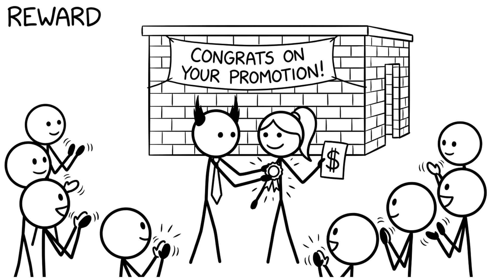

<section id="cap-reward" data-transition="fade" style="display:flex; align-items:center; justify-content:center; padding:0; background:#fcfcfa">

<p style="position:absolute;left:0;bottom:10px;width:1920px;margin:0;text-align:center;font-family:'Patrick Hand', 'Trebuchet MS', sans-serif;font-size:22px;color:#8a8f98">Copyright Dobromir Montauk 2026</p>
<aside><b>Reward.</b> "My job is to leave money in your pocket and memories in your head."<br>- Pay fairly and proactively: fix the underpaid engineer before they get the outside offer, not after.<br>- Equity and refreshers tied to impact, explained clearly.<br>- Recognition that's specific and public: name the person and what they did, in the all-hands, not just in a DM.<br>- Non-money rewards: the interesting project, the conference talk, the promotion case you write for them.<br>Money prevents a no. It rarely creates a yes.</aside>
</section>
